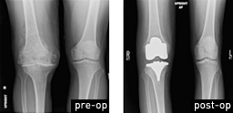
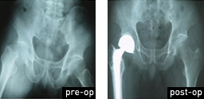
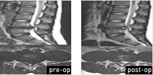

Specialized Clinics
Joints & Spine Clinic
Overview
-
Emergency Center - Emergency Center of Gil Medical Center is one of few hospitals in Korea that is capable of providing emergency medicine, trauma care, pediatric emergency treatment and emergency helicopter service. With numbers of national recognition as the regional trauma center, we are proud to offer you not only emergent care but also orthopedic surgeries for joints and spine via minimally invasive surgery.
MRI 3.0T 'MAGNETOM Skyra'
- - enables quick and accurate diagnosis of diseases with 3D and 4D multi-dimensional images.
Procedure
-

Total Knee Replacement
-
1. Admission period : 14 to 21 days
2. Recovery period : 1 month from the day of operation
3. Expected cost : 26,000 - 28,000$
Minimizing the incision on skin and bone; less bleeding and side effects occur-
rence rate.
Effective for straightening out for bow-leggedness and pain relief afterwards.
-

Total Joint Replacement
-
1. Admission period : 2 weeks
2. Recovery period : 6 months
3. Expected cost : 25,000 - 27,000$
Utilizing artificial joint made of Ceramics and special Alloy, early resumption to
daily activities is possible via minimally invasive surgery, and the artificial joint can
last up to 30 years maximum.
-

Rotator Cuff Repair
-
1. Admission period : 5 to 7 days
2. Recovery period : 6 weeks
3. Expected cost : 10,000 - 12,000$
Since arthroscopy surgery is a standard procedure, there is a decreased risk of
infection and decreased level of pain, leaving minimal skin scar.
-

Spine Discectomy Surgery
-
1. Admission period : 2 to 5 days
2. Recovery period : 7 days from
3. Expected cost : 7,000 - 8,000$
Utilizing minimally invasive surgery (6-7mm), disc portion that are compressing
spinal nerve will be removed, preserving the maximum amount of patient's own.
Advantages include short-term admission period and early recovery after surgery.
-

Spine Fusion
-
1.Admission period : 5 to 10 days
2. Recovery period : 1 to 3 months
3. Expected cost : 18,000 - 20,000$
Utilizing minimally invasive surgery (6-7mm), it can be surgically treated in mul-
tiple places, minimizing the side effects and admission period.